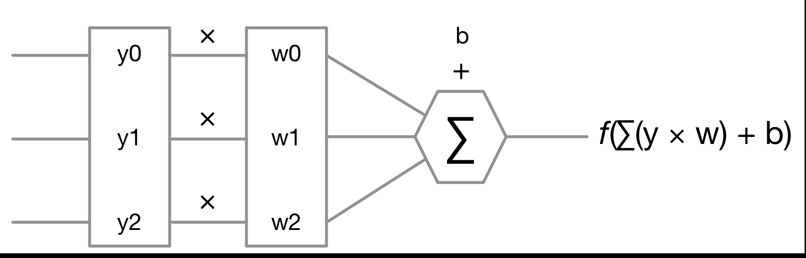
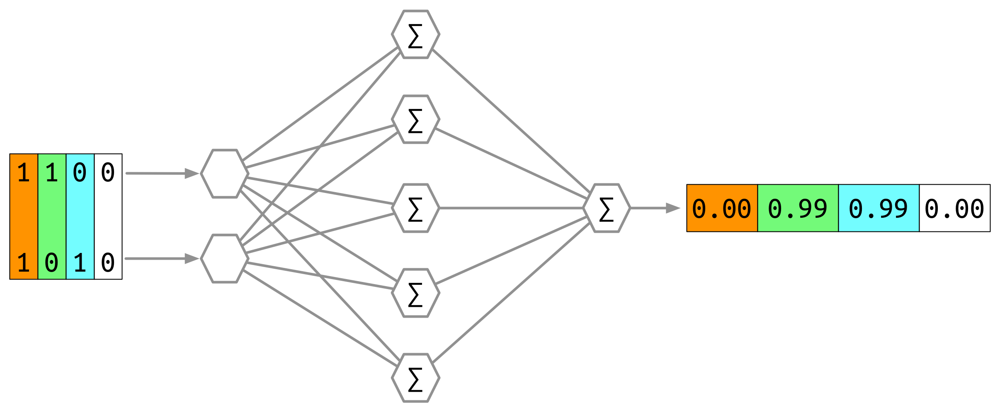
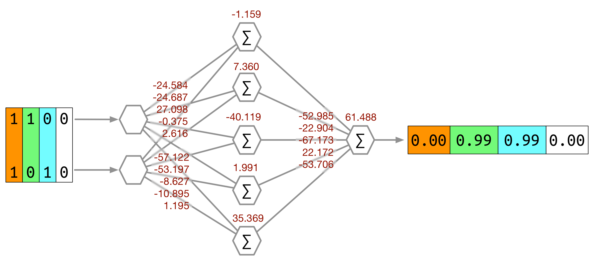

Distributed ML
Jan Macháček @honzam399
Yours truly goes to the gym...
Deltoid cable cross-overs

Rope triceps extensions

Barbell biceps curls

Dumbbell rows
Alternating dumbbell biceps curls
Back session
Surely, if a human can recognise these patterns...
Then a computer can, too!
We took samples from a training data set...

Trained a classifier...
Observed results...
And were mightily pleased!
We took samples from another training data set...
Trained a classifier...
Observed results...

And were somewhat pleased!
So, this should all work!
What's missing?
- How to find the best classifier
- How to train the classifier at speed?
- How to build the infrastructure?
- Where to get good quality training data?
Artificial neural network
Artificial neural network
Artificial neural network
Demonstration
(Forward propagation)
Training ANNs
- Many “nearly optimal” solutions
- Optimization and training techniques—LBFGS, back–propagation, batch and online gradient descent, downpour SGD, sandblaster LBFGS
Training ANNs
- Labelled training data
- Fit the model to the data
- Evaluate the model's performance on lablled test data
ML pipeline
- Add to a collection curated test and training data
- Load and preprocess the data
- Construct & train models on training data
- Evaluate the trained models on test data
- Save the model's parameters, weihts and biases
- Pick the most suitable model
Demonstration
(Pipeline)
Demonstration
(Training locally)
Demonstration
(To the difference enginecloud!)
Parallel and distributed
- You have a lot of data
- You have a lot of computation to do
- You have little time
- (You have a lot of money)
Demonstration
(Distributed ML)
Demonstration
(Profit!)
Q&A
Thank you!
- ☞ Jobs at www.cakesolutions.net/careers ☜
- All code at github.com/muvr
- Tweets at @honzam399